자연생태복원기사(구) (2021-05-15 기출문제)
1과목: 환경생태학개론
1. 라운키에르 (Raunkiaer) 생활형 구분에 따른 지중식물에 해당하지 않는 것은?
- 진달래
- 튤립
- 감자
- 갈대
(정답률: 55%)

2. 종에 대한 예측이 불가능하고, 급변하는 환경에서 서식하는 경향이 있는 종을 무엇이라고 하는가?
- 깃대종
- 개척종
- 핵심종
- 기회종
(정답률: 64%)
3. 해안군집의 유형에 속하지 않는 것은?
- 갯벌
- 하구
- 암반해안
- 건초지
(정답률: 90%)
4. 생태계에서 외부의 변화에도 불구하고 생태계 전체에서의 변동을 억제하는 능력이나 평형상태를 유지하려는 능력을 무엇이라고 하는가?
- 항상성
- 천이
- 포식
- 경쟁
(정답률: 90%)
5. 부영양화 상태인 호수의 특징으로 옳은 것은?
- 얕은 호수에서는 수초가 많이 자란다.
- 녹조류의 성장으로 용존산소가 늘어난다.
- 질소, 인의 농도와는 무관한 현상이다.
- 호수의 유기물이 줄어든다
(정답률: 64%)
6. 물질의 순환 중 질소순환에 대한 설명으로 틀린 것은?
- 질소는 대기 중 다량으로 존재하며 실물체에 직접 이용된다.
- 질소고정생물은 대기 중의 분자상 질소를 암모니아로 전환시킨다.
- 대부분의 식물은 암모니아나 질산염의 형태로 질소를 흡수한다.
- 식물은 단백질과 기타 많은 화합물을 합성하는데 질소를 사용한다.
(정답률: 79%)
7. 열역한 제2법칙에 대한 설명으로 틀린 것은?
- 엔트로피의 법칙이라고도 한다.
- 물질과 에너지는 하나의 방향으로만 변화한다.
- 질서 있는 것에서 무질서한 것으로 변화한다.
- 엔트로피가 증대한다는 것은 사용 가능한 에너지가 증가한다는 것을 뜻한다.
(정답률: 72%)
8. 환경변화에 대한 생물체의 반응이 아닌 것은?
- 압박
- 치사
- 차폐
- 조절
(정답률: 60%)
9. 자연 생태계 보전에 관한 대표적인 국제 기관은?
- IUCN
- UNESCO
- OECD
- FAO
(정답률: 74%)
10. 생태계의 생물적 구성요소에 해당하지 않는 것은?
- 대기
- 생산자
- 분해자
- 거대소비자
(정답률: 88%)
11. 식물정화법의 처리원리 중 ‘식물에 의한 추출’에 의하여 중금속류를 처리할 수 있는 가장 대표적인 식물 종은?
- 해바라기
- 버드나무
- 포플러나무
- 수생 서양 가새풀
(정답률: 60%)
12. 기온 변화에 따른 대기권의 구분에 해당하지 않는 것은?
- 대류권
- 성운권
- 중간권
- 열권
(정답률: 78%)
13. 개체군 밀도와 관련하여 총 단위 공간당의 개체수로 정의되는 것은?
- 조밀도
- 고유밀도
- 생태밀도
- 분산밀도
(정답률: 65%)
14. 열대지방 해안의 맹그로브 숲에 대한 설명이 틀린 것은?
- 조간대의 갯벌해안에 잘 발달된다.
- 뿌리로부터 들어오는 염을 제한하지 못한다.
- 광엽상록교목 혹은 관목인 염생식물이다.
- 산소와 이산화탄소를 교환하는 기근이 발달한다.
(정답률: 82%)
15. 생태계의 포식상호작용에서 피식자가 포식자로부터 피식되는 위험을 최소화하기 위한 장치로 볼 수 없는 것은?
- 의태
- 방위
- 위장
- 상리공생
(정답률: 83%)
16. 두 생물 간에 상리공생 관계에 해당하는 것은?
- 호두나무와 일반 잡초
- 인삼 또는 가지과 작물의 연작
- 관속 식물과 뿌리에 붙어 있는 균근균
- 복숭아 과수원의 고사목 식재지에 보식한 복숭아 묘목
(정답률: 81%)
17. 오존층 보호를 주요 목적으로 체결된 국제 협약이 아닌 것은?
- 비엔나 협약
- 몬트리올 의정서
- 미나마타협약
- 런던회의
(정답률: 68%)
18. 조간대 생물이 고온에 견디기 위해 주위로부터 흡수되는 열을 줄이거나 흡수된 열을 몸에서 방출하는 방법으로 거리가 먼 것은?
- 표면적을 최소화하여 열의 흡수를 적게 한다.
- 어두운 색의 패각을 가져 열의 흡수를 적게 한다.
- 패각에 굴곡을 많이 가져 열을 방출한다.
- 증발을 통해 열을 방출한다.
(정답률: 80%)
19. 생태계의 천이를 크게 3종류로 구분할 때 환경조건과 자원을 변형시키는 자체의 생물학적 작용의 결과로 일련의 변화가 일어나는 경우에 해당하는 것은?
- 자생천이
- 타생천이
- 퇴화적 천이
- 종속영양적 천이
(정답률: 79%)
20. 다음 생태계 구성요소 중 생산자에 해당하는 것은?
- 버섯
- 녹조류
- 벌
- 개미
(정답률: 85%)
2과목: 환경계획학
21. 지속가능한 발전과 관련하여 국토 및 지역자원에서의 환경계획 수립 시 고려해야 하는 사항이 아닌 것은?
- 인간의 활동은 환경적 고려사항에 의해서 궁극적으로 제한받아야 한다.
- 환경에 대한 우리의 부주의의 대가를 다음 세대가 치르도록 해서는 안 된다.
- 재생이나 순환 가능한 물질을 사용하고 폐기물을 최소화함으로써 자원을 보존한다.
- 프로그램과 정책의 이행 및 관리 책임을 가장 낮은 수준의 민간에서 전담해야 한다.
(정답률: 79%)
22. 국토환경성평가도 3등급 지역의 관리원칙에 해당하는 것은?
- 이미 개발이 진행되었거나 진행 중인 지역으로 개발을 허용하지만 보전의 필요성이 있으면 부분적으로 보전 지역으로 지정하여 관리
- 개발을 허용하는 지역으로 체계적이고 종합적으로 환경을 충분히 배려하면서 개발을 수용
- 보전지역으로서 개발을 불허하는 것을 원칙으로 하지만 예외적인 경우에 소규모의 개발을 부분 허용
- 보전에 중점을 두는 지역이지만 개발의 행위, 규모, 내용 등을 환경성평가를 통하여 조건부 개발을 허용
(정답률: 33%)
23. 백두대간 보호에 관한 법률상 백두대간보호 지역 중 핵심구역에서 할 수 없는 행위는?
- 광산의 시설기준, 개발면적의 제한, 훼손지의 복구 등 대통령령으로 정하는 일정 조건 하에서의 광산개발
- 도로, 철도, 하천 등 반드시 필요한 공용, 공공용 시설로서의 대통령령으로 정하는 시설의 설치
- 교육, 연구 및 기술개발과 관련된 시설 중 대통령령으로 정하는 시설의 설치
- 농가주택, 농림축산시설 등 지역주민의 생활과 관계되는 시설로서 대통령령으로 정하는 시설의 설치
(정답률: 48%)
24. 지역 환경 생태계획의 생태적 단위를 큰 것부터 작은 순서대로 옳게 나열한 것은?
- landscape district → ecoregion → bioregion →sub-bioregion → place unit
- bioregion →sub-bioregion → ecoregion → place unit → landscape district
- place unit → bioregion → sub-bioregion → ecoregion → landscape district
- ecoregion → bioregion → sub-bioregion → landscape district → place unit
(정답률: 68%)
25. 환경부장관, 해양수산부장관 또는 시∙도지사가 습지 중 아래의 어느 하나에 해당하는 지역에 대하여 지정할 수 있는 것은?
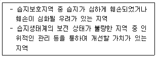
- 습지개선지역
- 습지복원지역
- 습지관리지역
- 습지복구지역
(정답률: 41%)
26. 국토공간계획과 관련한 국토기본법에 따른 지역계획의 구분에 해당하는 것은? (단, 그 밖에 다른 법률에 따라 수립하는 지역계획의 경우는 고려하지 않는다.)
- 수도권발전계획
- 광역권개발계획
- 도시기본계획
- 개발촉진지구계획
(정답률: 32%)
27. 생태네트워크 계획에 있어서 비오톱의 조성에 관한 일반원칙이 아닌 것은?
- 가능한 넓은 것이 좋다.
- 같은 면적이면 하나인 상태보다 분할된 상태가 좋다.
- 형태는 가능한 선형보다는 원형이 좋다.
- 불연속적인 비오톱은 생태적 통로로 연결시키는 것이 좋다.
(정답률: 71%)
28. 국토의 계획 및 이용에 관한 법률에서 정하고 있는 용도지역에 대한 설명으로 옳은 것은?
- 자연환경보전지역- 자원환경, 수자원, 해안, 생태계, 상수원 및 문화재의 보전과 수산 자원의 보호∙육성 등을 위하여 필요한 지역
- 보호지역- 농림업을 진흥시키고 산림을 보전하기 위하여 필요한 지역
- 도시지역- 관거 준농림지역과 준도시지역을 합친 지역
- 농림지역- 도시지역의 밀집이 예상되어 향후 개발을 위해 체계적인 개발, 정비, 관리, 보전 등이 필요한 지역
(정답률: 79%)
29. 토지적성평가와 국토환경성평가를 비교하여 설명한 내용이 틀린 것은?
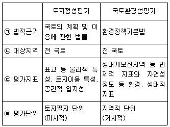
- ㉠
- ㉡
- ㉢
- ㉣
(정답률: 71%)
30. 일반적인 환경문제의 발생 특성에 해당하지 않는 것은?
- 상호단절성
- 광역성
- 시차성
- 탄력성과 비가역성
(정답률: 55%)
31. 환경 친화적 택지개발계획 수립을 위한 기본원칙으로서 자연자원보전 및 복원부분에 관한 내용으로 틀린 것은?
- 물순환을 고려하여 보도 등은 불투수성 재료로 포장하여 우수담수를 위한 오픈 공간을 조성한다.
- 건물옥상 및 인공지반을 이용하여 옥상녹화, 인공지반녹화, 벽면녹화 등으로 녹지면적을 최대한 확대한다.
- 보전가치가 있는 지형, 지질의 존재 유무와 보전대책 및 임상이 양호한 임야지역의 보전대책을 마련한다.
- 단지 내 단위 거점 소생물권인 연못, 채원, 자연학습원, 약초원, 유실수원 등을 균등하게 배치하고 이들의 그린네트워크를 구축한다.
(정답률: 72%)
32. 아래의 설명에 해당하는 국제협력기구는?
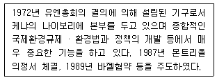
- 유엔개발계획
- 지구위원회
- 유엔환경계획
- 지속발전위원회
(정답률: 74%)
33. 자연환경보전계획 상 훼손지 복원의 추진방향에 대한 설명으로 거리가 가장 먼 것은?
- 자연회복을 도와주도록 하여야 한다.
- 자연의 군락을 재생, 창소하여야 한다.
- 자연에 가까운 방법으로 군락을 재생하여야 한다.
- 자연 훼손지를 극상군락으로 복원하여야 한다.
(정답률: 74%)
34. 도심이 외곽지역보다 기온이 1~4℃ 더 높고 기온의 등온선을 표시하면 도심부를 중심으로 섬의 등고선과 비슷한 형태를 나타내는 현상은?
- 바람통로
- 열대야현상
- 지구온난화
- 도시열섬현상
(정답률: 87%)
35. UNESCO에 의한 인간과 생물권 계획에 의한 보호지역 중 생태계의 훼손이 원칙적으로 허용되지 않는 지역은?
- 핵심지역
- 완충지대
- 전이지역
- 생태보전지역
(정답률: 66%)
36. 다음 중 생태∙자연도 1등급 권역에 해당하는 것은?
- 멸종위기 야생생물 5종이 살고 있는 습지
- 외래 어류를 포함하여 어류 15종이 서식하는 자연호소
- 멸종위기 야생생물 중 동물이 2종 이상 번식하거나 생육장으로 중요한 자연 습지
- 최근 5년간 철새가 1만 마리 이상 도래하면서 멸종위기 야생생물 조류가 평균 3종 이상 도래하는 습지
(정답률: 44%)
37. 국토의 계획 및 이용에 관한 법령에 따른 도시지역의 용도지역 세분에 해당하지 않는 것은?
- 유통상업지역
- 준주거지역
- 경공업지역
- 보전녹지지역
(정답률: 48%)
38. 환경문제의 발생 원인으로 거리가 가장 먼 것은?
- 농경지 훼손
- 기름 유출
- 생물 서식지 파괴
- 인구의 감소
(정답률: 85%)
39. 생태발자국에 관한 설명으로 옳은 것은?
- 일반적으로 글로벌 헥타르 단위로 표시한다.
- 생태발자국의 주요 지표로 산소발자국이 있다.
- 우리나라는 관리지역의 환경성 평가를 위해 생태발자국 개념을 도입하였다.
- 생태발자국이 높을수록 생태용량이 증가한다.
(정답률: 39%)
40. 지속가능성의 단계 중 환경교육 프로그램을 체계화하고, 지역발전을 위한 지방정부의 주도적 역할을 강조하는 단계에 해당하는 것은?
- 아주 약한 지속가능성
- 약한 지속가능성
- 보통의 지속가능성
- 강한 지속가능성
(정답률: 67%)
3과목: 생태복원공학
41. 하안 및 제방을 복원하는 방법에 관한 설명으로 옳지 않은 것은?
- 수변구역에 가축이나 사람이 들어가는 것을 제한하여 식생을 회복시키는 법은 가장 간단하며 성공률이 높다. 그러나 생물의 다양성은 매우 더디게 증가한다
- 홍수의 위험이 있거나 유속이 빠른 강의 하안에는 버드나무 말뚝을 설치하면 침식 등을 막을 수 있다. 이 때 가능한 수종은 냇버들, 흰버드나무 등을 사용한다
- 하안의 자연형 복원을 위하여 강의 수로, 둑의 경사, 유지관리 등을 고려하여 하안을 처리 하여야 홍수 등에 대비한 복원이 가능하다
- 하안에 버드나무를 식재하여 하안을 복원하렸을 시는 5∙10∙15년 주기로 정기적으로 버드나무를 교체하여 주는 것이 좋다
(정답률: 47%)
42. 황폐한 산간계곡의 유역면적 10ha인 곳에서 강우강도가 100mm/hr일 때, 최대유량(m3/s)은? (단, 유역의 유출계수 = 0.8. 감수계수가 고려된 합리식을 사용한다.)
- 0.1
- 0.2
- 2.2
- 4.4
(정답률: 61%)
43. 생태네트워크 계획의 과정이 순서대로 옳게 나열한 것은?
- 분석∙평가 → 조사 → 계획
- 분석∙평가 → 계획 → 조사
- 조사 → 분석∙평가 → 계획
- 조사 → 분석 → 계획 → 평가
(정답률: 72%)
44. 수목의 뿌리에 담자균류가 침입하여 가는 뿌리 주위에 균사가 이루어진 두꺼운 층이 발달하고, 뿌리 밖으로 균사다발이 신장하는 것은?
- VA균근
- 외생균근
- 내생균근
- 내외생균근
(정답률: 70%)
45. 생태 이동통로의 형태 중 훼손 횡단부위가 넓고, 절토 지역 또는 장애물 등으로 동물을 위한 통로설치가 어려운 지역에 만들어지는 통로는?
- box
- culvert
- shelterbelt
- overbridge
(정답률: 76%)
46. 새롭게 서식처를 조성해 주는 방법들 중 미리 결정된 설계에 온전한 경관을 포함하는 것으로서 나무를 식재하고. 관목 숲을 형성하는 등의 방법으로 가장 접합한 것은?
- 자연적 형성
- 정치적 서식처
- 서식처 구조 형성
- 설계자로서의 서식처
(정답률: 58%)
47. 자연환경복원을 위한 기초 조사 및 분석 항목 중 그 내용이 틀린 것은?
- 인문사회 환경의 조사 및 분석 대상은 토지이용, 인간의 비간섭, 서식처이다.
- 역사적 기록의 조사 및 분석 대상은 고지도, 항공사진, 인공위성 영상이다.
- 기반환경의 조사 및 분석 대상은 지형, 기후, 수리, 토양이다.
- 생물종의 조사 및 분석 대상은 식생, 곤충, 어류, 포유류 등이다.
(정답률: 60%)
48. 훼손지 비탈면 녹화용 식물선택의 기본적 요건에 해당되지 않는 것은?
- 건조에 견디는 힘이 커야 한다 .
- 번식력과 생장력이 왕성해야 한다.
- 다년생으로 동계의 보전효과가 높은 식물이어야 한다.
- 근계의 발달이 지나치게 좋으면 비탈면의 붕괴를 가져오므로 초본류의 식물로만 선택한다.
(정답률: 80%)
49. 식재기반공 중 가로나 주차장 및 광장 등의 식수대 안에 식재할 때 사용되는 방법으로 현지 토양을 굴삭하여 객토로 바꿔 넣는 공법은?
- 경운공
- 객토치환공
- 객토성토공
- 경운객토성토공
(정답률: 77%)
50. 곤충류의 서식처 조성 기법 중 다공질 공간 제공 기법으로 옳지 않은 것은?
- 고목 배치
- 통나무 쌓기
- 돌무더기 놓기
- 다공질 콘크리트 쌓기
(정답률: 75%)
51. 다음 [보기]가 설명하는 인간과 생물종간의 거리로 옳은 것은?
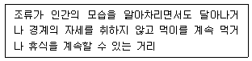
- 경계거리
- 회피거리
- 도피거리
- 비간섭거리
(정답률: 73%)
52. 생태공학적 측면에서 녹색방음벽에 대한 설명으로 틀린 것은?
- 버드나무 등을 활용하여 방음벽을 녹화한다.
- 식물이 서식 가능한 화분으로 녹화한 방음벽이다.
- 녹색투시형 담장이나 기존방음벽에 녹색으로 도색한 방음벽을 말한다.
- 태양전지판 등을 설치하여 자연에너지를 설치할 수 있는 발전시설을 겸하는 방음벽을 말한다.
(정답률: 64%)
53. 식물 생활사의 수명에 따른 분류와 해당 식물의 연결이 옳지 않은 것은?
- 2년생 식물: 붓꽃
- 다년생 식물: 참억새
- 여름형 1년생식물: 벼
- 겨울형 1년생식물: 보리
(정답률: 62%)
54. 2000m2의 면적에 발생기대본수 2000(본/m2)을 파종하고자 할 때 파종량(kg)은?(단, 발아율 50%, 평균입수 2000/g, 순량률 80%)
- 2.5
- 5
- 2500
- 5000
(정답률: 43%)
55. 생물다양성 증진을 위한 습지를 조성하고자 할 경우, 개방수면의 적정 비율은?
- 15
- 20
- 50
- 100
(정답률: 65%)
56. 매립지 복원 공법 중 하부층인 세립 미사질 토층에 파일을 박아 하단부 투수층까지 연결한 후 파일 파이프 안에 모래, 사질양토, 자갈 등을 넣어 배수를 원할히 하는 공법은?
- 사구법
- 사주법
- 치환법
- 객토법
(정답률: 54%)
57. 비오톱의 하나인 생태연못의 조성에 관한 설명으로 옳지 않은 것은?
- 호안처리는 안정을 고려하여 콘크리트를 이용하여 균일한 호안으로 조성한다.
- 종다양성을 높이기 위해 관목숲, 다공질 공간 등 다른 생물 서식공간과 연계되도록 한다.
- 자연석 등 자연재료를 도입하며, 주변에 향토수종을 식재하여 자연스런 경관을 형성한다.
- 기복이 심한 지형, 일조조건, 수심, 식생 등을 폭넓게 고려하여 안정적인 서식지를 조성한다.
(정답률: 83%)
58. 다음 중 “생태적 복원”에 대한 개념을 가장 잘 설명한 것은?
- 생태계의 복구를 통해 원래의 생태적 환경을 유사하게 재연하는 과정
- 인간에 의해 손상된 고유생태계의 다양성과 역동성을 고치려는 과정
- 원래의 생태적 조건과는 관계없이 보다 나은 생물서식공간을 창출하는 과정
- 생태계를 지속적으로 유지하지 못했던 지역에 지속성이 높은 생태계를 새롭게 만들어내는 과정
(정답률: 39%)
59. 식물종자에 의한 유전자 이동의 방법 중 동물에 의한 산포방법이 아닌 것은?
- 기계형산포
- 부착형산포
- 피식형산포
- 저식형산포
(정답률: 79%)
60. 다음 중 연못을 포함한 습지의 가장자리에 생육하는 정수 식물이 아닌 것은?
- 줄
- 갈대
- 부들
- 개구리밥
(정답률: 73%)
4과목: 경관생태학
61. 다음 중 경관생태학 발달에 최초의 공헌을 한 학물 분야는?
- 수학
- 물리학
- 지리학
- 동물분류학
(정답률: 76%)
62. 생태적 동태를 고려한 생태 계획의 유형을 지칭하는 것은?
- 경관 계획
- 적응적 계획
- 지구단위 계획
- 공원녹지 계획
(정답률: 50%)
63. 생성요인에 따른 경관조각의 특성에 관한 설명이 틀린 것은?
- 잔류조각은 교란이 주위를 둘러싸고 일어나 원래의 서식지가 작아진 경우에 나타난다.
- 재생조각은 교란된 지역의 일부가 회복되면서 주변과 차별성을 가지는 경우에 생긴다.
- 도입조각은 암석, 토양 형태와 같이 주위를 둘러싸고 있는 지역과 물리적 자원이 다른 조각에 의해서 생긴다.
- 교란조각은 벌목, 폭풍이나 화재와 같이 경관바탕에서 국지적으로 일어난 교란에 의해서 생긴다.
(정답률: 54%)
64. 경계에 대한 설명이 틀린 것은?
- 인간의 간섭이 많은 지역에서는 상대적으로 곡선형 경계가 우세하다.
- 경계를 따라 또는 가로질러 야생동물이 이동한다.
- 경계의 길이와 내부서식지 비율은 생물 다양성에 매우 중요하다.
- 경계부에서 일반적으로 생물 다양성이 높고, 이러한 곳을 주연부 효과라고 한다.
(정답률: 63%)
65. 산림생태계에서 생태천이로 인해 나타나는 산림군집의 기능적∙구조적 변화에 대한 설명이 틀린 것은?
- 천이 후기단계로 갈수록 종다양성이 높고 생태적 안정성이 높아진다.
- 생태계의 기본 생육전략은 K 전략에서 r전략으로 변화한다.
- 생태천이 초기에는 광합성량과 생체량의 비 (P/B)가 높다.
- 생태천이 후기에는 호흡량이 높아져 순군집 생산량은 초기 단계보다 오히려 낮아진다.
(정답률: 63%)
66. 사전환경성검토 시 입지의 적절성을 판단하기 위한 현황 파악 지표가 아닌 것은?
- 주요 생물 서식공간의 분포 현황
- 환경 관련 보전지역의 지정 현황
- 개발 사업의 유형
- 개발 대상지역의 지가
(정답률: 70%)
67. 댐 건설로 인한 경관적 영향으로 거리가 가장 먼 것은?
- 유속 증가
- 식생 유실
- 시각적 질의 변화
- 대규모 절성토 비탈면 형성
(정답률: 72%)
68. 광산∙채석장의 유형에 따른 복구 공법 수립시 고려할 사항으로 거리가 가장 먼 것은?
- 복구목표
- 훼손지의 규모
- 서식처의 파편화
- 채광*채석 종료시 형상
(정답률: 61%)
69. 야생동물 복원에서 야생동물 종의 움직임에 대한 고려는 매우 중요하다. 다음 설명에 해당하는 움직임은?
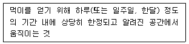
- 이동
- 이주
- 돌발적 이동
- 행동권 이동
(정답률: 74%)
70. 지구관측위성 Landsat TM의 근적외선 영역 (파장: 0.76 ~0.90um)을 이용한 응용분야는?
- 식생유형, 활력도 생체량 측정, 수역, 토양 수분 판별
- 물의 투과에 의한 연안역 조사, 토양과 식생의 판별, 산림유형 및 인공물 식별
- 식생의 스트레스 분석, 열 추정
- 광물과 암석의 분리
(정답률: 50%)
71. 경관 척도에서 서식지 보호를 위한 생물학적 원리로 틀린 것은?
- 가능한 가장자리를 많이 만들어 새로운 서식지를 제공함으로써 생식을 돕는다.
- 개발로 인한 패치의 파편화를 예방함으로써 손상되지 않은 패치들을 유지한다.
- 종 보호를 위해 우선순위를 정하고, 종들의 분포도와 풍부도를 발생시키는 서식지를 보호한다.
- 야생동물의 이동을 위한 통로를 정하고 보호함으로써 서식지들 간의 연결성을 유지한다.
(정답률: 73%)
72. 다음 보기 중 산림경관의 시*공간적 척도 변이 진행과정을 가장 올바르게 나열한 것은?
- 유목성장 - 수목대체 - 2차 천이 - 종 이동 - 종 소멸
- 유목성장 - 2차 천이 - 수목대체 - 종 소멸
- 유목성장 - 종 이동 - 수목대체 - 2차 천이
- 종 소멸 - 수목대체 - 2차 천이 - 유목성장 - 종 이동
(정답률: 42%)
73. 코리더의 기능에 대한 설명이 틀린 것은?
- 서식처로 기능하며 주연부 종과 일반종이 우세하다.
- 코리더를 통한 야생동물의 이동은 유전자의 이동을 도와 개체군의 근친교배에 의한 유전적 침체를 막아준다.
- 오염물질을 통과시키는 여과기능을 한다.
- 이동통로로서 서식처 간 연결성을 높이며 야생동물의 행동권을 갈라놓는 장벽의 기능은 없다.
(정답률: 42%)
74. 생태축을 구성하는 4가지 핵심요소를 모두 옳게 나열한 것은?
- 징검다리, 기후대, 식생, 완충녹지
- 핵심지역, 완충지역, 기후대, 생태통로
- 완충지역, 징검다리녹지, 핵심지역, 가장자리
- 핵심지역, 완충지역, 징검다리녹지, 생태통로
(정답률: 60%)
75. 파편화와 관련하여 토착 식생으로 이루어진 큰 조각의 특성에 대한 설명으로 틀린 것은?
- 내부종과 행동권이 작은 생물종에게만 서식처를 제공한다.
- 많은 생물의 번식처가 되어 주변 서식처에 생물종을 공급한다.
- 낮은 차수의 하천들의 연결성을 확보한다.
- 대수층과 호수의 수량과 수질 조절에 유익한 기능을 갖는다.
(정답률: 74%)
76. 아래 설명과 같은 특징을 갖는 해양 식물군락은?
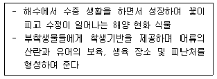
- 갈대 군락
- 거머리말(해초) 군락
- 칠면초 군락
- 해조류 군락
(정답률: 65%)
77. 경관을 구성하는 지형∙토질 등의 요소가 수직적으로 경관 단위를 구성하고 또한 다른 경관단위는 자연적 조건과 인위적 조건의 영향을 받아 수평적으로 배치되는 것을 무엇이라 하는가?
- 경관모자이크
- 자연지역
- 이질적인 공간
- 결절지역
(정답률: 72%)
78. 해류∙하안류에 의하여 운반된 모래가 파랑에 의하여 밀려 올려지고 그곳에서 탁월풍의 작용을 받아 모래가 낮은 구릉 모양으로 쌓여서 형성된 지형은?
- 해안사빈
- 해안사구
- 펄
- 파식대지
(정답률: 73%)
79. 징검다리 또는 디딤돌 비오톱에 대한 설명으로 틀린 것은?
- 생물서식공간이 단절되어 분리된 공간에서 야기된 고립화의 영향을 저하시킨다.
- 지역의 고유한 개체군이 장기간에 걸쳐 생존하기에 충분한 생태공간이다.
- 많은 종들에게 서식의 핵이 되는 지역 사이를 이동 가능하게 한다.
- 낙차공과 방죽에 설치된 장해물 철거도 디딤돌 비오톱을 새롭게 미련하는 기능과 동일하다.
(정답률: 55%)
80. 현재 사용 중인 주요 원격탐사 위성자료 중 정지궤도에 있으며 해상력이 가장 낮은 것은?
- SPOT HRV
- IKONOS
- QuickBird
- NOAA GOES
(정답률: 52%)
5과목: 자연환경관계법규
81. 자연공원법상 자연공원의 효과적인 보전과 이용을 위해 공원관리청이 공원계획으로 결정하는 용도지구의 구분에 해당하지 않는 것은?
- 공원마을지구
- 공원자연보존지구
- 공원문화유산지구
- 공원생태환경지구
(정답률: 36%)
82. 농지법상 농업진흥구역에서 허용되지 않는 토지이용행위는?
- 농수산물의 가공∙처리 시설의 설치
- 어린이놀이터의 설치
- 국방∙군사 시설의 설치
- 대기오염배출시설의 설치
(정답률: 66%)
83. 자연환경보전법령상 생태∙자연도를 작성할 때 구분하는 지역 중 별도관리지역에 해당하지 않는 것은?
- 수도법에 따른 상수원보호구역
- 산림보호법에 따른 산림보호구역
- 문화재보호법에 따라 천연기념물로 지정된 구역
- 자연환경보전법에 따른 시∙도∙생태∙경관보전지역
(정답률: 56%)
84. 산지관리법령상 산사태위험판정기준표에 사용되는 용어의 정의 및 적용기준과 관련하여 ㉠과 ㉡에 들어갈 내용이 모두 옳은 것은?
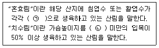
- ㉠ 25% 초과 75%미만, ㉡6cm
- ㉠ 25% 초과 75%미만, ㉡10cm
- ㉠ 50% 초과 75%미만, ㉡6cm
- ㉠ 50% 초과 75%미만, ㉡10cm
(정답률: 37%)
85. 국토의 계획 및 이용에 관한 법령상 용어의 정의가 틀린 것은?
- “용도구역”이란 토지의 이용 및 건축물의 용도∙건폐율∙용적률∙높이 등에 대한 용도지역 및 용도지구의 제한을 강화하거나 완화하여 따로 정함으로써 시가지의 무질서한 확산방지, 계획적이고 단계적인 토지이용의 도모, 토지이용의 종합적 조정, 관리 등을 위하여 도시∙군관리계획으로 결정하는 지역을 말한다.
- “기반시설부담구역”이란 개발밀도관리구역 내의 지역으로서 개발로 인하여 도로, 공원, 녹지 등 대통령령으로 정하는 기반시설의 설치가 필요한 지역을 대상으로 기반시설을 설치하거나 그에 필요한 용지를 확보하게 하기 위하여 지정∙고시하는 구역을 말한다.
- “지구단위계획”이란 도시∙군계획 수립 대상지역의 일부에 대하여 토지 이용을 합리화하고 그 기능을 증진시키며 미관을 개선하고 양호한 환경을 확보하며, 그 지역을 체계적으로 수립하는 도시∙군관리계획을 말한다
- “공동구”란 전기, 가스, 수도 등의 공급설비, 통신시설, 하수도시설 등 지하매설물을 공동 수용함으로써 미관의 개선, 도로구조의 보전 및 교통의 원활한 소통을 위하여 지하에 설치하는 시설물을 말한다.
(정답률: 49%)
86. 산지관리법에 따른 산지 구분에 해당하지 않는 것은?
- 생산용 산지
- 공익용 산지
- 임업용 산지
- 준보전 산지
(정답률: 49%)
87. 정부는 국가의 생물다양성 보전과 그 구성요소의 지속가능한 이용을 위한 전략을 몇 년마다 수립하여야 하는가?
- 1년
- 3년
- 5년
- 7년
(정답률: 67%)
88. 다음은 환경정책기본법령상 용어의 정의이다. ( )안에 들어갈 내용으로 옳은 것은?
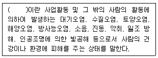
- 환경오염
- 환경훼손
- 환경용량
- 환경기준
(정답률: 78%)
89. 독도 등 도서지역의 생태계 보전에 관한 특별법상 특정도서에서의 행위제한 대상으로 옳은 것은?
- 군사∙항해∙조난구조 행위
- 개간∙매립∙준설 또는 간척 행위
- 국가가 시행하는 해양자원개발 행위
- 천재지변 등 재해의 발생 방지 및 대응을 위하여 필요한 행위
(정답률: 76%)
90. 야생동물 보호 및 관리에 관한 법령상 환경부장관이 멸종위기 야생동물을 지정하는 주기 기준은?
- 1년
- 3년
- 5년
- 10년
(정답률: 57%)
91. 환경정책기본법령상 환경기준에 따른 대기의 항목별 기준이 틀린 것은?
- 일산화탄소: 1시간 평균치 25ppm 이하
- 이산화질소: 24시간 평균치 0.06ppm 이하
- 오존: 1시간 평균치 0.1ppm 이하
- 벤젠: 연간 평균치 0.5um/m3 이하
(정답률: 49%)
92. 다음 중 국토기본법에 정의된 내용이 옳은 것만으로 나열된 것은?
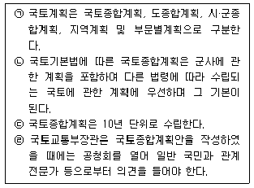
- ㉠, ㉡
- ㉡, ㉢
- ㉢, ㉣
- ㉠, ㉣
(정답률: 57%)
93. 자연환경보전법령상 생물다양성 보전을 위한 자연환경조사 관련 내용으로 옳은 것은?
- 환경부장관은 관계중앙행정기관의 장과 협조하여 10년마다 전국의 자연환경을 조사하여야 한다
- 환경부장관은 관계중앙행정기관의 장과 협조하여 5년마다 생태*자연도에서 1등급 권역으로 분류된 지역의 자연환경을 조사하여야 한다
- 환경부장관 또는 지방자치단체의 장이 자연환경조사를 하여금 타인의 토지에 출입하고자 하는 경우. 소속 공무원 또는 조사원은 출입할 날의 3일 전까지 그 토지의 소유자*점유자 또는 관리인에게 그 뜻을 통지하여야 한다
- 정밀조사와 생태계의 변화관찰 등을 관련하여 조사 및 관찰에 필요한 사항은 국무총리령으로 정한다
(정답률: 47%)
94. 환경정책기본법령상 환경부장관이 환경현황조사를 의뢰하거나 환경정보망의 구축∙운영을 위탁할 수 있는 전문기관에 해당하지 않는 것은?
- 한국개발공사
- 보건환경연구원
- 국립환경과학원
- 한국수자원공사
(정답률: 59%)
95. 국토의 계획 및 이용에 관한 법령상 개발행위허가의 제한과 관련한 아래 내용에서 ( )에 들어갈 내용으로 옳은 것은?
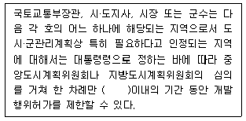
- 1년
- 2년
- 3년
- 4년
(정답률: 45%)
96. 야생동물 보호 및 관리에 관한 법령상 멸종위기 야생생물 Ⅱ급에 해당하는 것은?
- 표범
- 산양
- 붉은박쥐
- 하늘다람쥐
(정답률: 57%)
97. 국토의 계획 및 이용에 관한 법령상 도시∙군관리계획 결정의 효력 발생에 관한 아래 설명에서 ( )에 들어갈 내용으로 옳은 것은?
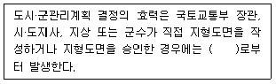
- 지형도면을 고시한 날
- 지형도면을 고시한 날로 7일 후
- 지형도면을 고시한 날로 15일 후
- 지형도면을 고시한 날로 30일 후
(정답률: 57%)
98. 야생동물 보호 및 관리에 관한 법령상 살처분한 야생동물 사체의 소각 및 매몰기준 중 매몰 장소의 위치 기준이 틀린 것은?
- 한천, 수원지, 도로와 30m이상 떨어진 곳
- 매몰지 굴착과정에서 지하수가 나타나지 않는 곳 (매몰지는 지하수위에서 1m 이상 높은 곳에 있어야 한다.)
- 음용 지하수 관정과 50m 이상 떨어진 곳
- 주민이 집단적으로 거주하는 지역에 인접하지 않은 곳으로 사람이나 동물의 접근을 제한할 수 있는 곳
(정답률: 59%)
99. 자연환경보전법령상 생태∙경관보전지역 지정에 사용하는 지형도에 관한 설명이다. ( )에 들어갈 내용으로 옳은 것은?
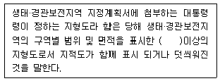
- 축척 5천분의 1
- 축척 2만 5천분의 1
- 축척 5만분의 1
- 축척 10만분의 1
(정답률: 33%)
100. 습지보전법규상 훼손된 습지의 관리에 관한 아래 설명 중 밑줄 친 부분에 해당하는 내용으로 옳은 것은?
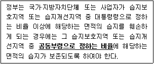
- 지정 당시의 습지보호지역 또는 습지개선지역 면적의 2분의 1 이상
- 지정 당시의 습지보호지역 또는 습지개선지역 면적의 3분의 1 이상
- 지정 당시의 습지보호지역 또는 습지개선지역 면적의 4분의 1 이상
- 지정 당시의 습지보호지역 또는 습지개선지역 면적의 10분의 1 이상
(정답률: 60%)